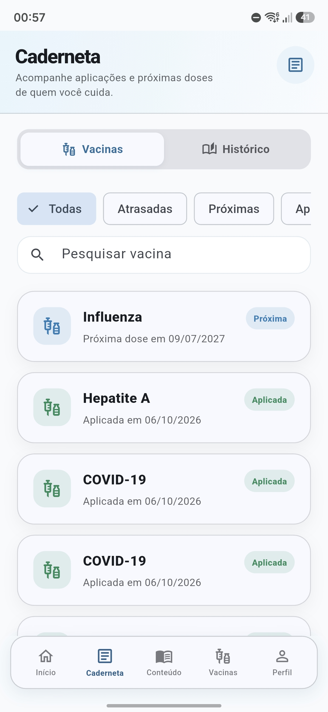
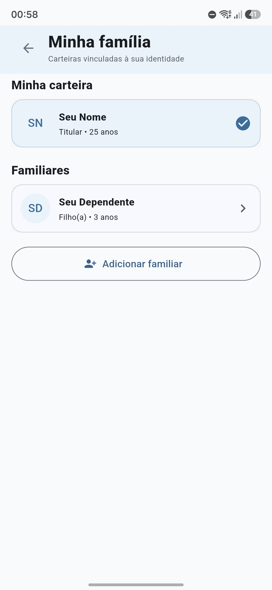
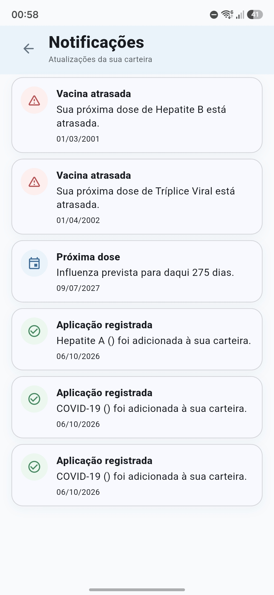

Carteira digital
Consulte seu histórico e identifique vacinas aplicadas, próximas doses e doses atrasadas em um só lugar.
Tecnologia a serviço do cuidado
Sua vacinação em um só lugar. Uma carteira digital que conecta você, sua família e os profissionais de saúde.
Download do APK para Android
Google Forms · Abre em nova aba
Um projeto de saúde e tecnologia.
Feito em Franca, SP.
Sobre o Vitta
Esquecer uma dose, perder a caderneta ou não encontrar uma informação: o cuidado também passa por esses desafios.
O Vitta nasceu para apoiar o acompanhamento da vacinação, com foco inicial em Franca-SP. A proposta reúne registros, lembretes e informações em um ambiente digital acessível.
O aplicativo aproxima as pessoas de seu histórico vacinal. O Painel Web permite que profissionais de saúde gerenciem os registros. As duas plataformas compartilham as informações.
Principais funcionalidades
Recursos que ajudam a organizar o acompanhamento da sua vacinação e de quem está sob seus cuidados.
Consulte seu histórico e identifique vacinas aplicadas, próximas doses e doses atrasadas em um só lugar.
Acompanhe avisos de doses próximas e atrasadas pela central de notificações do aplicativo.
Gerencie dependentes e consulte a carteira de cada pessoa, mantendo os históricos separados.
Explore o catálogo de vacinas e conteúdos educativos sobre imunização em uma linguagem simples.
Conheça o aplicativo
Da consulta à carteira ao acompanhamento da família, conheça os principais espaços do Vitta.

Encontre os registros e consulte os detalhes de cada aplicação.

Alterne entre o seu perfil e os familiares vinculados à sua conta.

Consulte os avisos relacionados à sua situação vacinal.
Painel Web · Ambiente profissional
Um espaço para profissionais de saúde cadastrarem pacientes, registrarem aplicações e consultarem carteiras de vacinação.
Os registros do painel integram a mesma estrutura de dados consultada no aplicativo.
Acesso para profissionais autorizados · Projetado para desktop
Artigo científico
O trabalho investiga dificuldades no acompanhamento da vacinação e apresenta o desenvolvimento do Vitta como proposta de apoio à organização dos registros vacinais.
Baixar o artigo em PDFETEC Dr. Júlio Cardoso
Técnico em Desenvolvimento de Sistemas · Franca-SP
Avalie o Vitta
Testou o aplicativo? Sua opinião é importante para entendermos o que funciona bem e o que ainda pode melhorar. Responda nosso questionário e ajude a evoluir o Vitta.
Google Forms · Abre em nova aba
Quem faz o Vitta
Um projeto desenvolvido por alunos do curso Técnico em Desenvolvimento de Sistemas da ETEC Dr. Júlio Cardoso, em Franca-SP.
Analista e Designer
Desenvolvedor
Analista e Designer
Desenvolvedor
Designer e Desenvolvedor